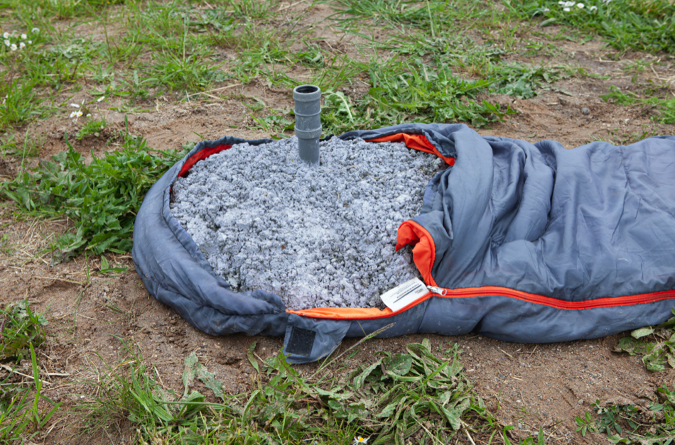
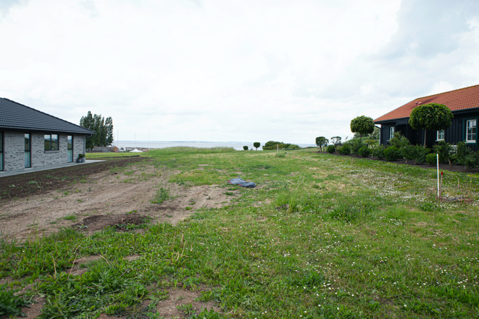

Rummes Agre 67, 2022
SSS-biennalen, Ærø
Du åbner døren til den rummelige entré belagt med parketgulv. Videre ind i den store lyse opholdsstue med højt til loftet og gulv til loft termoruder. Et godt regulært soveværelse, nyt funktionelt køkken med spiseplads og ud igennem gangen til et dejligt badeværelse med lyse klinker, gulvvarme og bruseniche. Perfekt planløsning.
Rummene er indkapslet af en ikke synlig hinde af beton, rockwool og dampspærrer. Luftfugtigheden er høj, og kondensen løber ned af væggene. Via trappen i entréen går du op til første salen, hvor der er endnu en stor stue med den skønneste udsigt over landskabet, som er opløst i beton og cylinderformet konstruktioner.

